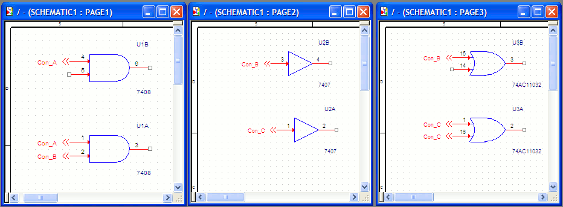
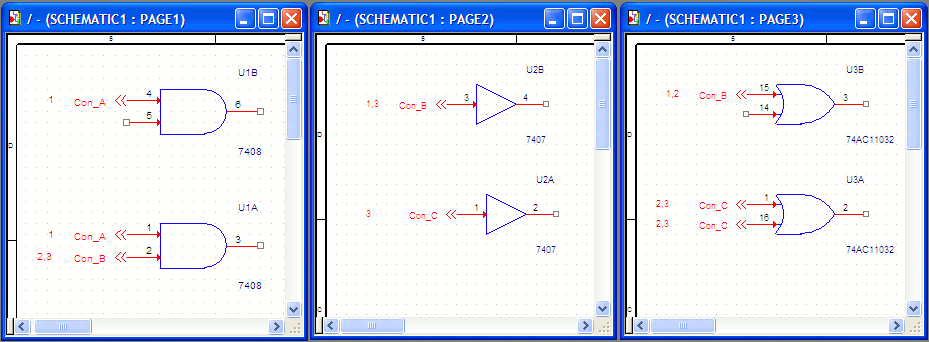

For every off-page connector on the pages of a flat design,
the intersheet reference of its port will be attached to
that connector.
Take the example of the following flat design that
contains three pages.

Note the off-page connectors (con_A, Con_B and Con_C) used
to the parts across the three pages.
Notice the output if you create intersheet references to
trace the signals across the pages of this design:

Con_A:
Since the two connectors lie on page 1, the intersheet references are defined as 1 for both connectors.
Con_B
On page 1 the reference is defined as 2,3. This implies
that the signals for this connector exist on page 2 and
page 3.
Similarly, if you see the Con_B reference on page 2 is 1,
3 and the reference on page 3 is 1,2.
Con_C
The page 2 reference for Con_B is 3 since the signals for this exist on page 3. Now the page 3 reference for both Con_C connectors on page 3 show as 2,3. This implies a signal exists on page 2. Also, another signal for this connector exists on page 3 itself.
|
|
The page numbers defined in an intersheet reference are derived from the page numbers defined in the page title block. |
In a design containing a large number of pages and signals, you use the signal navigation facility in Capture to navigate connected signals across pages on your design.